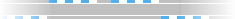

De: La Frikipedia, la enciclopedia extremadamente seria.
De: La Frikipedia, la enciclopedia extremadamente seria. De: La Frikipedia, la enciclopedia extremadamente seria.
| De la serie aquellos suicidas de baja plantilla: | |||
| Penosete Gibernau  | |||
| |||
| Pais: | | ||
| Moto nº: | No tiene pero llevaba el 15 | ||
| Marca: | No tiene pero estaba en Ducati | ||
| Moto: | No tiene pero llevaba una GP9 | ||
| Escudería: | No tiene pero estaba en Onde2000 Francisco Hernando (lo peor que ha habido en las MotoGP) | ||
| Nº de accidentes provocados: | Uno y medio por carrera | ||
| Nº de motos destrozadas: | Dos por carrera | ||
| Nº de muertes que se le atribuyen: | La de su trayectoria | ||
| ¿Ha ganao alguna vez algo? | Pocas en cuando andaba en Gris-ini | ||
Penosete Gipringaubernau es uno de los cuatro ángeles caídos del deporte.
Penosete, también conocido como payasete por sus actuaciones circenses en los circuitos. A pesar de que su nombre suene a catalán, nació en el planeta Plaf-2, lugar en donde la fuerza de la gravedad es tan grande que la gente cae constantemente al suelo. Un buen día, Bruce Lee, quien se encontraba haciendo turismo por la Vía Láctea, se fijó en el joven plafniano y decidió ficharlo para convertirlo en la mayor leyenda de la historia del motociclismo. Los motivos que hicieron que Lee se fijara en el hombra más torpe del planeta son una incógnita. La carrera deportiva de Penosete fue una serie de grandes catástrofes consecutivas que provocaron en su manager un ataque asesino de vergüenza ajena, debido a las burlas de toda la prensa deportiva y las risas que provocaba en todo el mundo el hecho de contemplar sus actuaciones, lo que hizo que Bruce Lee decidiera apartar a su pupilo del mundo de las motos en 1981. No se sabe qué ocurrió con Penosete tras este momento, pero no se le volvió a ver con forma humana desde entonces, ya que desde entonces Gibernau se convirtió en uno de los ángeles caídos del deporte.
Lo más destacado además de que triplica la fuerza de la gravedad es que es camaleónico (o eso se cree él mismo)Una de sus míticas frases es aquella que dice: "Somos azules" levantaba una ceja y se quedaba tan ancho, mientras todos observábamos una mutación de tono inexistente y que nunca llegaría. Penosete Gibernau posee además, los mismos poderes que los otros tres ángeles caídos , posee un par de alas de mariposa que le permiten volar y es inmortal , pero además posee otro poder: es capaz de estrellarse y caerse con una frecuencia asombrosa , y durante estos accidentes se le ocurren brillantes ideas gracias a los ataques de amnesia que le provocan los golpes. En uno de sus ataques amnésicos cree tener alucinaciones con Esther Cañadas. La desilusión fue tan grande que después de obligarle a repetir varias veces en voz alta: "Teléfono, mi casa"" se divorcia y vuelve al mundo del motor en busca de más ataques amnésicos de esos.
Actualmente Penosete se encuentra en coma en el Hospital de su aldea natal , pero se rumorea que Manuel Fraga pretende usar su poder para hacer que vuelva en si.
| | ||
|
Autor(es):